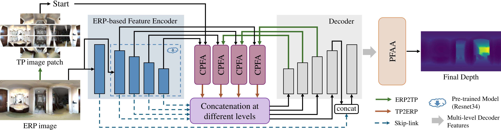

Omnidirectional
Geometric Perception
Capturing the Entire Scene via a Geometric Cognitive System
Background
360° cameras can capture an entire scene from a single camera at a time. However, the resulting Equirectangular Projection (ERP) introduces geometric distortions that cause traditional CNNs to fail. Our Geometric Cognitive System bridges this gap through a suite of specialized techniques.
Case Study: Cross360 Framework
Framework Overview: Unified ERP-based Encoding and Multi-scale Fusion
Cross360 estimates 360° depth through three main components: an ERP-based feature encoder, Cross Projection Feature Alignment (CPFA), and Progressive Feature Aggregation with Attention (PFAA). The CPFA module aligns Tangent and ERP features, while the PFAA module processes decoder features at multiple levels to produce a final, high-fidelity depth map.
CPFA Module: Tangent-to-ERP Feature Alignment
PFAA Module: Multi-level Feature Aggregation
Academic Foundation
This geometric cognitive system is built upon our original scientific publications:
Cross360: 360° Monocular Depth Estimation via Cross Projections Across Scales
2026 IEEE Transactions on Image Processing | Journal Impact: 13.7
Multi-task Geometric Estimation of Depth and Surface Normal from Monocular 360° Images
2024 Computational Visual Media Journal | Journal Impact: 17.2
PanoNormal: Monocular Indoor 360° Surface Normal Estimation
2025 ICXR / Virtual Reality & Intelligent Hardware Journal
Journal Impact
Impact factor of our multi-task learning research published in CVMJ 2024.
Research Tier
IEEE Transactions on Image Processing (TIP).
Spatial Awareness
Simultaneous Depth + Surface Normal estimation for complete scene reconstruction.
Technical Stack
Architecture
Vision Transformer (ViT) & Multi-Head Self-Attention
Geometric Logic
Cross-Projection Transformation & ERP-Tangent Fusion
Innovation
Cross-Attention Alignment & Multi-task Joint Synergy